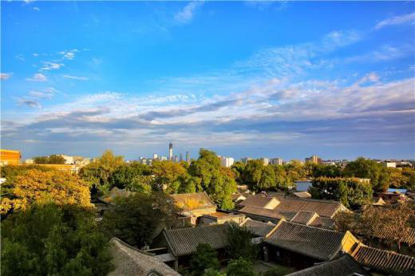
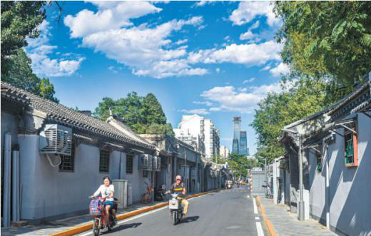
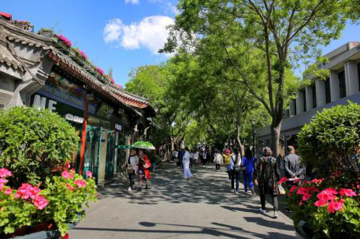
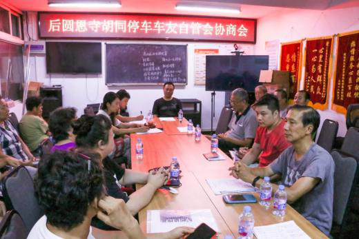
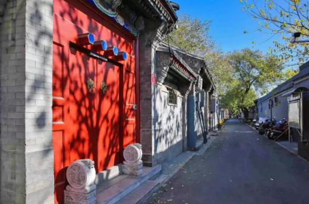

南锣鼓巷历史文化街区率先颁布《机动车停车规划》
来源：北京东城
笔者从东城区获悉，就南锣鼓巷历史文化保护区机动车管理工作专门研究制定了《机动车停车规划》，成为全市首个历史文化街区的停车规划。在这一规划的指导下，南锣鼓巷地区将通过实现胡同不停车，还胡同公共空间给市民。同时配合街区更新工作，未来南锣鼓巷地区将打造有绿荫处、有鸟鸣声、有老北京味儿的胡同公共空间，重拾老北京的胡同记忆。
近年来，随着居民车辆增多，大量机动车停放在南锣鼓巷历史文化街区的各条胡同内，挤压有限的公共空间，机动车见缝插针的随意乱停行为不但影响正常交通秩序，破坏胡同风貌和胡同居住环境，也阻碍应急车辆通行，给居民生命财产安全带来重大隐患。
交通治理有规划 公共空间腾出来
近几年，东城区基于《北京市城市总体规划（2016年-2035年）》已经连续开展地区交通秩序整治工作。2018年5月颁布的《北京机动车停车条例》明确了街道办事处对属地交通管理的职责和权利，进一步促进了各地区的停车治理工作。目前东城区已经率先实现了西总布胡同“单行禁停”，打造了全市首个“不停车”胡同；随后实现了王府井地区“胡同不停车”，创建了全市首个“不停车”街区。实行不停车的胡同，由于减少交通流量，腾出公共空间，不但环境品质得到提升，更获得社会的广泛认可，静下来的胡同还原了真正的历史风貌，让居民生活更加舒适，获得感大幅提升。
南锣鼓巷地区作为北京市25片历史文化街区之一，东城区政府一直致力于推进该地区交通秩序治理，提升南锣鼓巷地区整体环境。为了对南锣鼓巷历史文化街区开展更加科学、合理的交通秩序整治，东城区交通委员会委托北京市规划设计研究院制订了《南锣鼓巷历史文化街区机动车停车规划》。停车规划的原则是公平性、一致性、动态性、前瞻性和可实施性。《规划》明确了目标：建设以人为本、可持续发展的兼具首都风范、古都风韵、时代风貌的安宁交通系统，利用停车调控交通出行结构，提升历史文化街区环境品质，打造精品胡同片区，让胡同居民过上现代生活。据《南锣鼓巷历史文化街区机动车停车规划》，南锣鼓巷历史文化街区29条胡同中宽度为6米及以上的胡同仅占15.4%，规划近期目标为拟实现宽度6米以下胡同路内不停车，在6米以上胡同适当设置停车位，使胡同机动车停车秩序化；远期目标是不断挖潜建设停车资源，以空间换空间的方式逐步减少胡同停车。终期目标是基本清除胡同路内停车位，基本实现胡同路内不停车。
梯次推进列计划 疏堵结合来便民
按照《南锣鼓巷历史文化街区机动车停车规划》的阶段性目标，首先在符合条件的胡同内依法依规施划停车位，实现“单行单停”、“停车入位”；同时，不断深入挖潜地区停车资源，依据《北京市机动车停车条例》第三十六条：服务半径内有停车设施可以提供停车泊位的，一般不得设置道路停车泊位；不具备停车条件的胡同，不得设置道路停车泊位。南锣鼓巷地区以福祥-炒豆-蓑衣-雨儿；帽儿-板厂-东棉花-北兵马司；秦老-后圆恩寺-菊儿；前鼓楼苑-黑芝麻-沙井-景阳4个区域由南向北分步推进胡同不停车。
实现胡同不停车，要依法依规适度满足胡同居民实际需求。
2018年，南锣鼓巷地区交通秩序综合整治依托居民停车自管会，开展了居民停车资质认证。同时为减少社会车辆进入南锣地区胡同停放带来的停车压力，依托平房区物业管理，在南锣鼓巷地区胡同实行远端管控。
目前，东城区政府已专门协调北京市基础设施投资有限公司，利用地铁8号线交通织补用地建设成南锣鼓巷南口便民临时停车场，同时协调周边设施的地下停车资源，最大限度向符合居民停车资质认证标准的车辆提供车位，并且针对符合“三证合一”以上停车资质居民协调了居民停车收费优惠价格。
为了保障居民停车需求，交道口街道办事处协调在停车场内划出了居民专用停车区域；同时为了方便居民在胡同和停车场间的到达，满足胡同居民特别是老弱病残孕等特殊人群的出行需求，街道协调南锣鼓巷地区平房区物业管理公司在不停车胡同区域向居民提供了免费便民摆渡车服务，并加强摆渡车管理，保障居民使用需求的时效和服务，居民可凭服务电话预约便民服务车出行。
雨儿胡同不停车 八成居民都赞成
按照前期工作计划，目前阶段为实现雨儿胡同不停车，《南锣鼓巷历史文化街区机动车停车规划》的发布为推进南锣鼓巷地区交通治理和雨儿胡同不停车工作提供了更加科学的依据支撑。在南锣鼓巷地区交通秩序整治过程中，社区通过居民议事协商自治，引导居民广泛参与胡同交通停车管理，以胡同居民停车自管会的形式推进共商共治共享。
为了实现雨儿胡同不停车，交道口街道充分发挥共商共治，召开居民议事协商讨论会10余次，不断向居民做政策宣讲，并引导居民成立停车自管会推动交通秩序的共管；召开数次居民座谈会共同商讨胡同公共空间使用和交通秩序整治问题，充分听取居民意见，并引入社会专业力量推进工作。特别是2018年11月以来，街道集中开展了政策宣传和群众动员工作，对《北京市机动车停车条例》等政策法律法规进行解读，对居民们的疑问进行解答，并深入居民家中开展动员工作，发放《致雨儿胡同居民的一封信》。经过针对胡同居民的调查问卷统计，雨儿胡同81%以上的居民赞成雨儿胡同不停车。不仅是雨儿胡同的居民，驻街单位、过往行人、中外游客也希望雨儿胡同能够还原胡同本来的街巷风貌，提升生活环境，留出生命通道和呼吸空间。
据了解，南锣鼓巷地区目前已经实现福祥胡同、蓑衣胡同、炒豆胡同和前圆恩寺胡同4条胡同不停车，胡同环境得到了显著提升。同时，雨儿胡同不停车工作得到了胡同居民的广泛认可和支持，绝大多数停车居民已经办理了停车入场的手续并不在胡同内继续停放。
交通执法作保障 找回胡同老记忆
按照《新总规》要求，改变机动车停放影响交通秩序、破坏胡同历史风貌的情况，7月起，区公安交管部门将依据《中华人民共和国道路交通安全法》等法律法规在雨儿胡同内安装机动车禁停标识和非现场交通执法设备，通过适当的法治手段，维护公众利益，保护古都风貌。届时，雨儿胡同真正成为南锣鼓巷地区的第5条不停车胡同。雨儿胡同将和其他不停车胡同一样，地上的车没了，环境品质提升了，交通顺畅了，城市风貌将得到更好的保护，让胡同里的居民们重拾北京胡同的美好记忆。
胡同不停车是适应城市发展的需要，是城市文明进步的体现，是北京市历史风貌保护的必然要求，是推进公共空间管理的重要措施，更是广大居民改善生活环境的期盼。社区将继续组织胡同居民成立停车自治组织，针对停车工作通过议事协商实行居民自治管理。并且，南锣鼓巷地区交通秩序综合整治将持续推进，通过不断挖掘停车资源、融入民智民力，通过综合整治和区域疏导，有序推进南锣鼓巷地区交通治理，逐步实现胡同不停车目标，恢复胡同风貌，形成宜居型、文化型的特色历史文化街区。